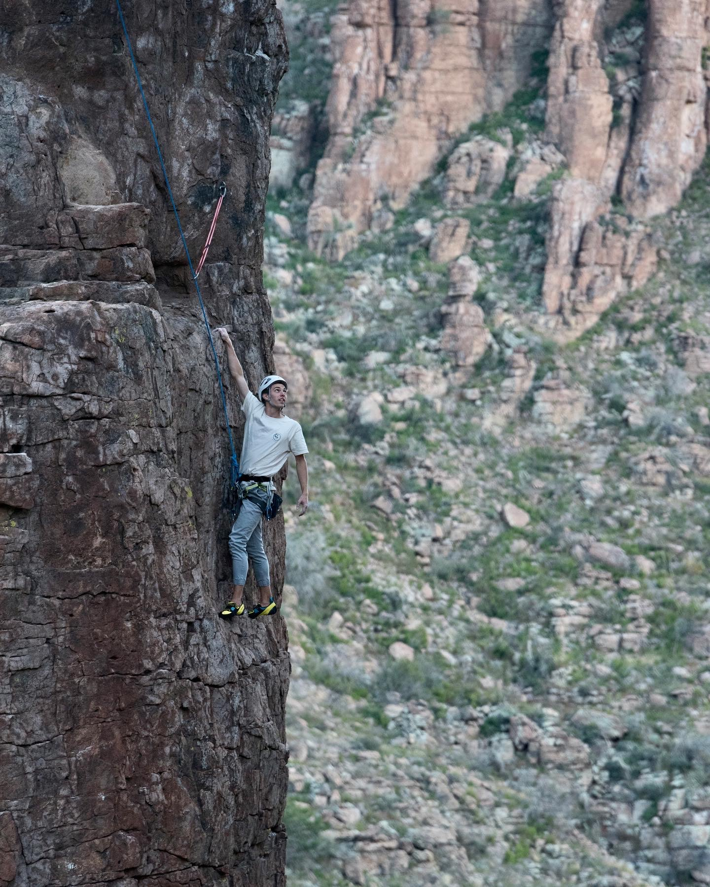
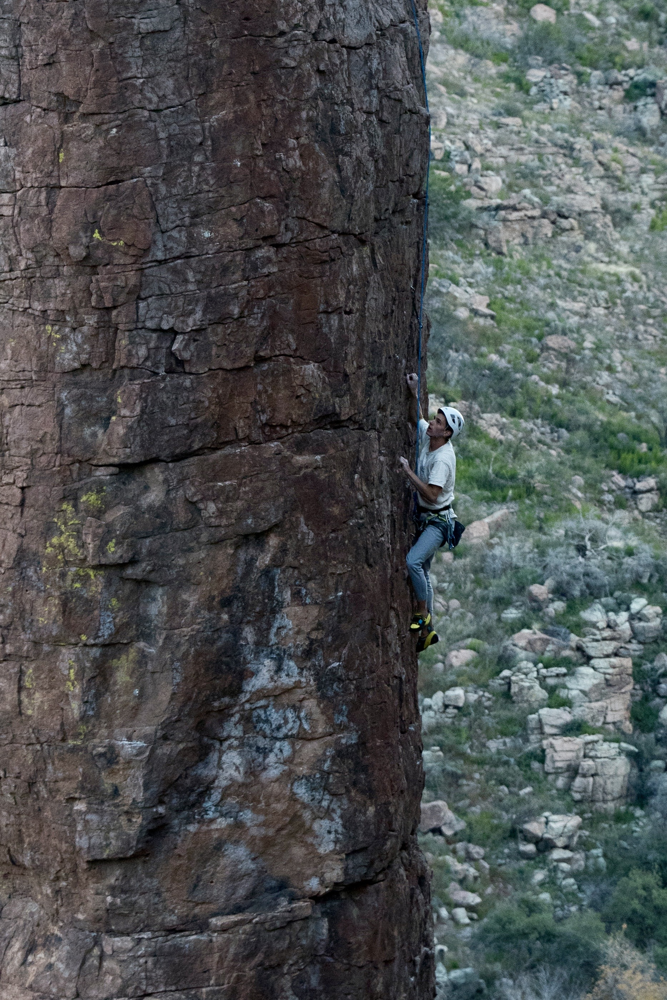
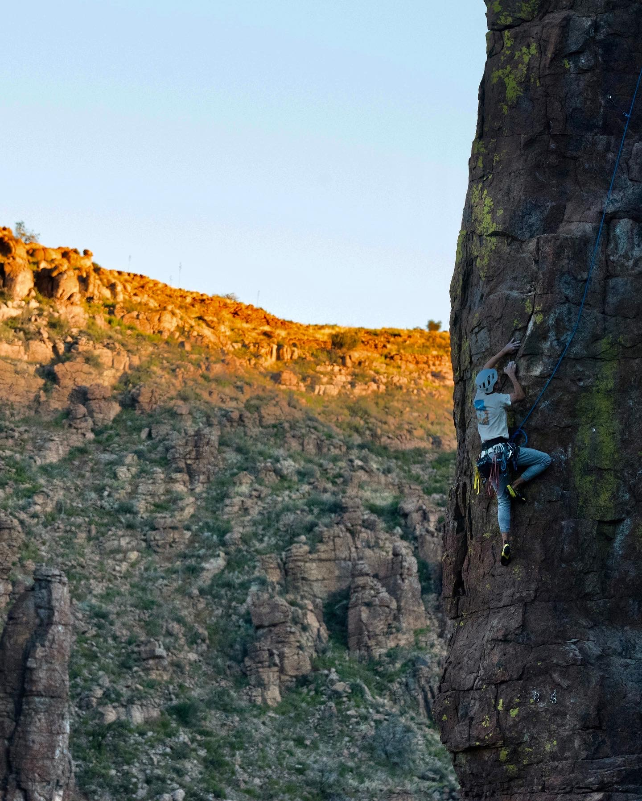
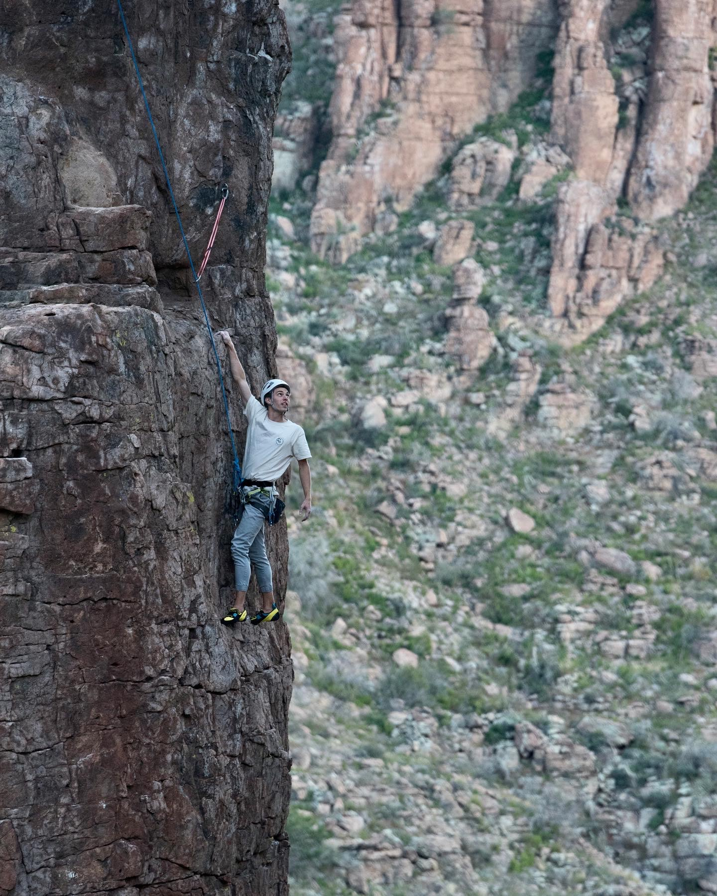
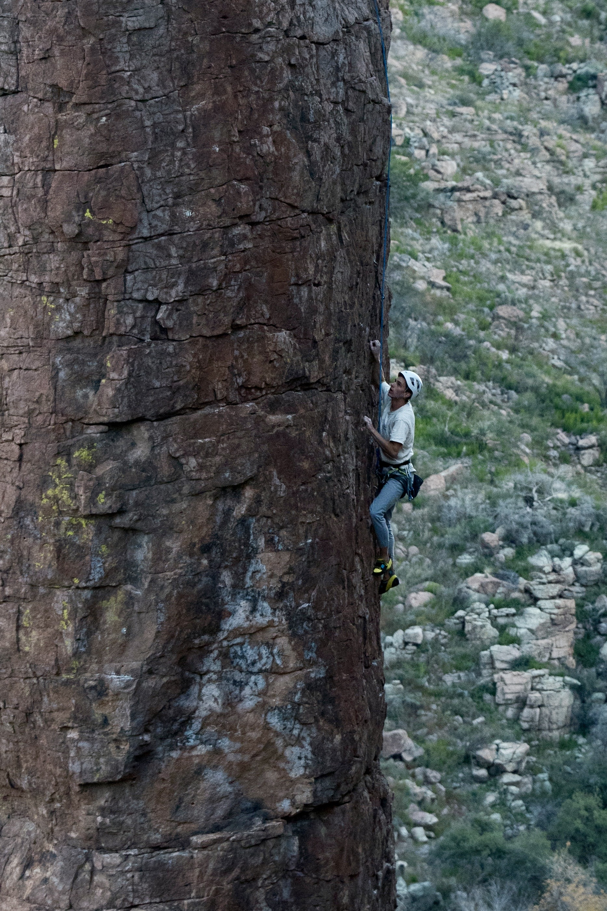
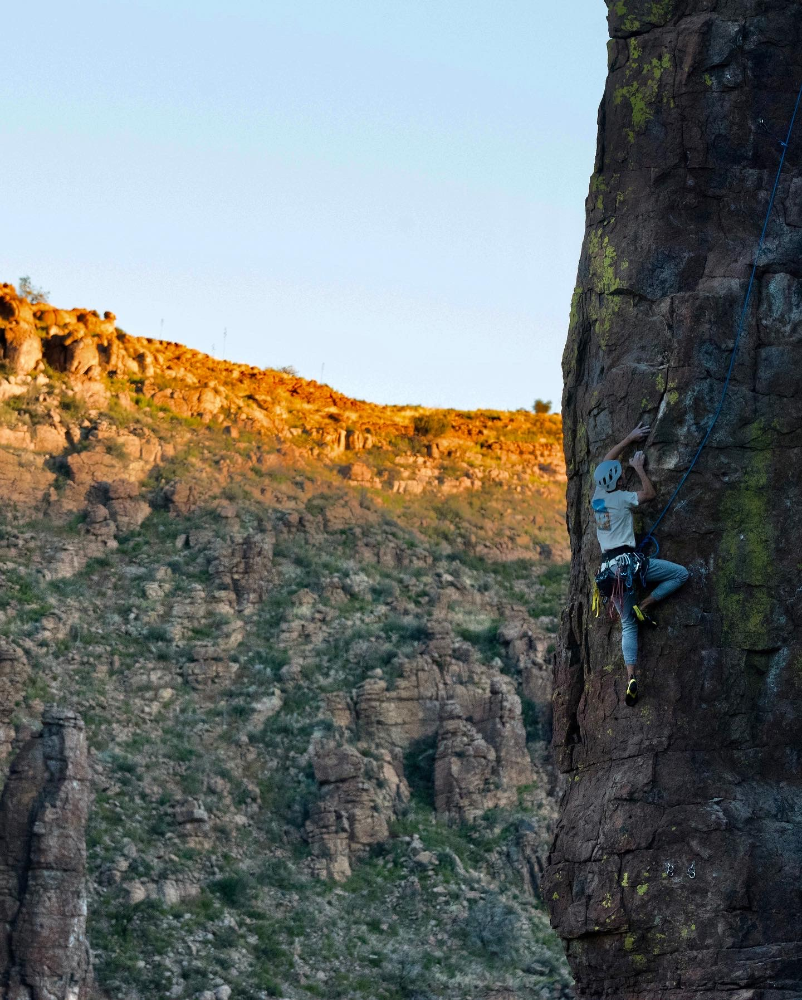
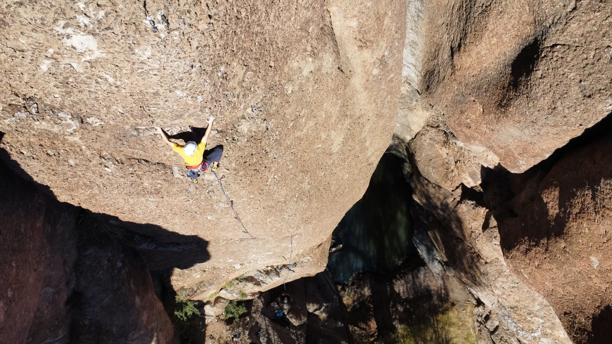
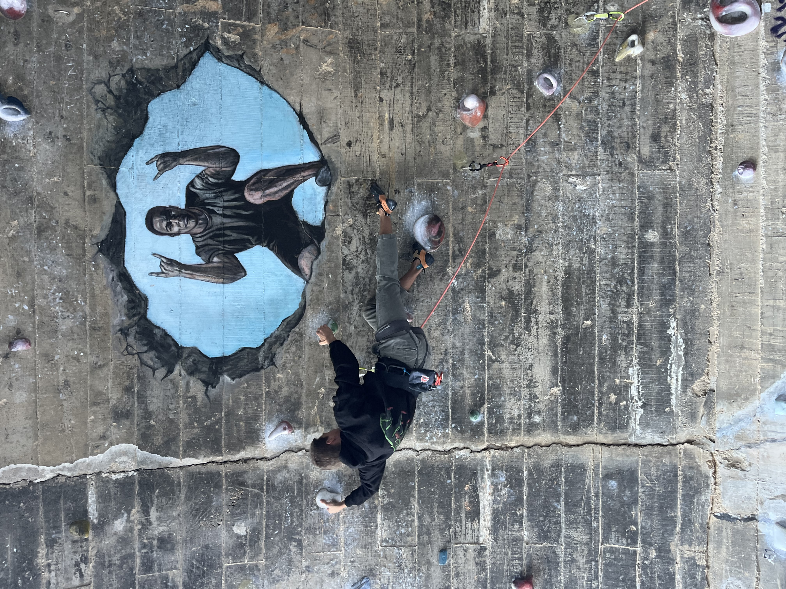
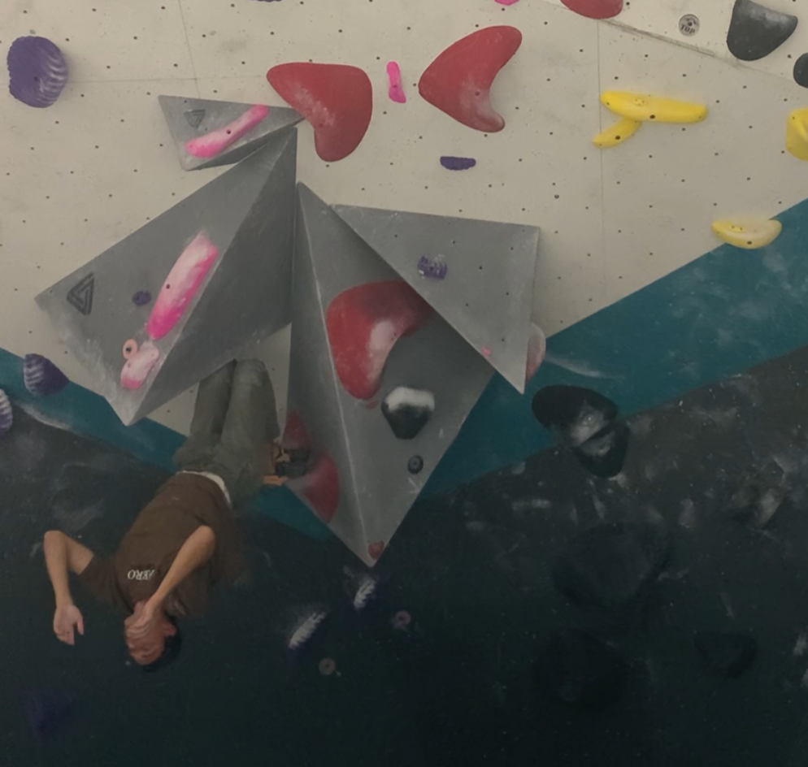

Welcome to my page made from scratch!
This page will mainly just be about rock climbing since I can ramble on about it for ages easily.
To easily access certain parts of my page, feel free to click down on these:
Climbing Disciplines and Styles
Find a Climbing Gym Near You!
My Favorite Climbs
Behold, one of the most historic ascents of climbing history. Silence, the first sport route graded at the difficulty of 9c. To this day, Silence has never seen a repeat ascent.
Ordered list of my favorite styles and disciplines in climbing:
-
Sport climbing
- Daunting at times, sport climbing recquires the climber to carry the rope up with them, setting up "checkpoints" of safety by clipping into bolts periodically spaced along the route. This is the same kind of climbing done on Silence in the video above.
-
Favorite styles within sport climbing:
- Overhang
- Slab
- Vertical
-
Top rope
- Safest form of climbing, although it doesn't count as a legit "send" in the climbing world.
- This is done by climbing with the rope attached to an anchor above you and the rope kept relatively taught or with little slack. As a result, the risk is extremely low and a fall is only a fall of a few inches.
- Mostly just for gym climbing, or rehearsing a route.
- Favorite styles of top rope climbing:
- Slab
- Vertical
- Overhang
- Trad Climbing
- Similar to sport climbing, though trad climbing requires the climber to place pieces of protection into cracks rather than clip into anchor bolts drilled and cemented into the rock.
- Much more daunting as it is common for gear placements to come out in event of a fall.
- Still a loved discipline of climbing since most trad climbs are done on long splits of sandstone cracks reuiring different techniques that are to die for.
- Requires a lot of skill, knowledge, and experience.
-
Favorite styels of trad climbing:
- Slab
- Vertical
- Overhang (still too scared to try that)
-
Bouldering
- Bouldering requires no rope or any sort of protection other than pads or mats on the ground to soften a fall.
- Typically done on boulders or areas about 15' high.
- Typically a boulder packs a lot of difficulty into just a few short moves.
- Favorite styles of bouldering:
- Slab
- Overhang
- Vertical
-
Deep Water Soloing (DWS)
- Requires no protection at all, other than to be done over water.
- Lots of fun since you don't have to worry about gear.
- Super rad.
- Favorite styles of DWS
- Overhang
- Vertical
- Slab (not super safe)
- Multi-Pitch Climbing and Big Walling
- Requires a lot of knowledge and experience.
- It is the art of stacking climbs on top of each other. Rather than descend after climbing up 50-100 feet, the climber will anchor themselves atop the climb, then belay their partner from above, and then climb another 50-100 feet and so on.
- Ascending routes over 120' typically require a multi pitch approach. Big wall is just a much larger version of multi-pitch climbing. Many big wallers sleep in ledges on the cliff, hundreds of feet in the air.
- Favorite styles of multi-pitch climbing:
- Slab
- Vertical
- Overhang
- Ice Climbing
- Dangerous. Ice can break easily and the only protection available is the use of hand screwing ice screws into the ice and clipping your rope through that, while lead climbing.
- Uses ice tools such as axes and crampons.
- Beautiful. Ice pillars are just so amazing.
- Requires lots of knowledge, skill, and experience about ice, weather conditions, decision making, risk managmenent, and more.
- Favorite styles of ice climbing
- Slab (it's the only kind I've even attempted)
- Overhang (to watch, never would I attempt it)
- Vertical
- Aid CLimbing
- Aid climbing uses ladders, hooks, and other tools to ascend a cliff rather than just climbing shoes, chalk and your strength.
- Aid climbing is often used to bypass unclimbable sections.
- Though it may sound easier, it definitely is not. It requires a plethora of knowledge, and in many cases can be extremely dangerous.
- Favorite styles doesn't make to much sense for aid climbing.
- Free Soloing
- Climbing with absolutely no protection at all.
- Inherently dangerous, but quite impressive for those who can manage the risk.
- Don't confuse it with 'free climbing'. Free climbing is another term for lead, sport, or trad climbing.
- For favorite styles, I'd only ever feel comfortable climbing or watching someone on a slab crack or slab full of good holds.
- Speed Climbing
- NOT REAL CLIMBING
- SHOULD NOT BE IN THE OLYMPICS
- THE DUMBEST THING EVER, SORRY IF YOU ARE A SPEED CLIMBER
- Why the hate?
- Doesn't require climbing skills of any other discipline
- Always the same exact route (boring)
- Doesn't require problem solving like every other discipline does
- Done on an auto-belay (what they use for little kids birthday parties)
- The Olympics made the climbing competition combine each competitors scores from lead, bouldering, and speed to win. Since no real climbers specialize in speed climbing, it throws everyone off and gives speed climbers an unfair advantage in a sport they're not really even a part of.
- Climbing was never about speed
- It's a bit like asking Michael Jordan to have to perform at a proffesional level in soccer to be considered a legendary basketball player.
- Perhaps speed climbing isn't awful, but it shouldn't be combined with the other forms of climbing.

Here's a collection of some of my favorite climbs I've done:
 




Climbing the Totem Pole, a 150 foot spire in the Apache Wilderness.


Climbing at The Pond, a long route full of pockets and near a seasonal waterfall and pond. The climb on the right follows an arete on thin holds and pockets providing very creative and thoughtful climbing.

Steve's Arete, a mega classic climb on Mt Lemmon in Tucson, AZ. It follows a steep arete on granite with quartzite bands making for a scenic climb. The road winds behind it along with a sunset and desert greenery.


La Foixarda is a tunnel in Barcelona, Spain a local turned into a public climbing space requiring steep climbing and powerful moves. The second picture is my home bouldering gym featuring a route with some cool knee bar moves and hands free rests.